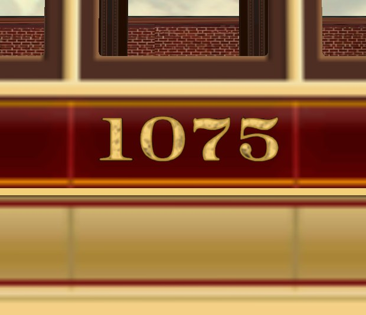
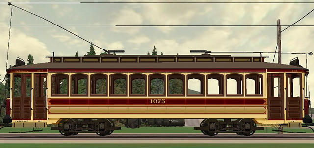
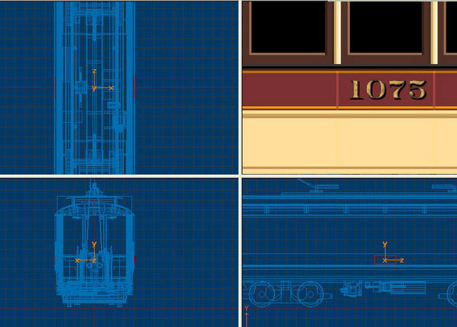
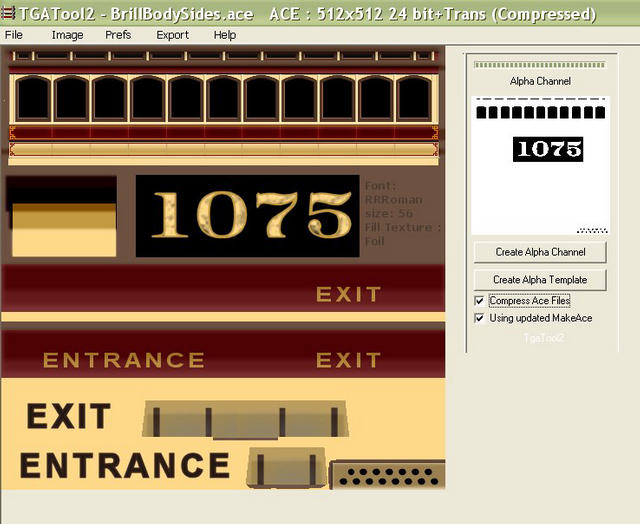
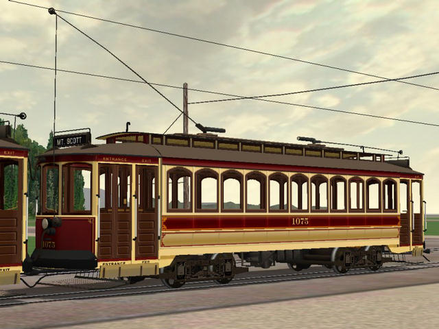
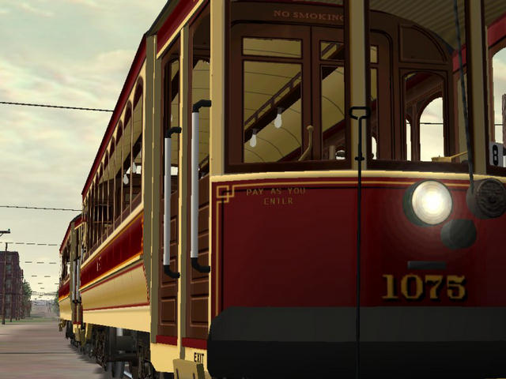
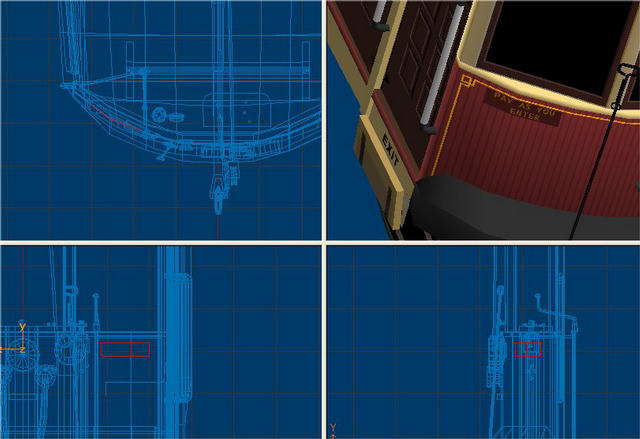

The above image shows how the sharper lettering shames the 512x512 side textures of the streetcar.

Step back 20 feet or so, and it jells quite nicely.
Now, I am going to show how I do it in TSM. I'm sure 3DC and Gmax users have similar procedures.
First, I create a box roughly the size of the number, or lettering. Delete all polys but the "face" poly, that which will be textured, and remove all orphaned points. Now arrange it as close to the body as possible in position.

Once you have it in position, open its properties and give it a name and parent, and choose its material : TransNorm. Now texture it, and adjust its dimensions one more time if needed, using the re-sizing function. Once it's satisfactory, make a copy and paste it on the opposite side ( If needs be).
Now the texture. This is how my 512x512 map looks:

As you can see, in this edited image of TGATool2, the letterboard is cut out using an alpha channel, leaving just the numbering to be "drawn" by the sim. This system seems to be working well so far as I can determine. I suspect that older slower OS's with older video cards may show some bleed-through. Also note the lettering "Entrance" and "Exit". These were done on separate letterboards also, but not using the alpha cut-out, but using the same color background as the part they are placed against, namely the cantilever beams below the doors:

This works well for flat areas, but if you need to place a letterboard against a curved panel, like on the front of this trolley, you're going to need a box with 2 or more sections in its width dimension.

I needed to write "PAY AS YOU ENTER" in small lettering here, too small to be legible on the 512 map. So, I made a TransNorm box again, this time with 2 sections in width. After deleteing all unnecessary polys and points, I textured it then placed it against the curved front. Now, in point mode, I adjust the four corners, "bending" it back against the curve of the dash, with the middle points stationary against the bend of the front. Once you have it all adjusted to your satisfaction, click F4 and then OK. This resets the texture to fit after any stretching of the part causes distortion of the image.

This technique demands an alpha texture, though, because the curved panel will be lit differently than the curved front part of the streetcar, and will show its borders. As you can see, the letters are like decals, and none of their backing shows, only the dash of the trolley.
Well, I hope I haven't forgotten any points. I also hope I made it clear enough for anyone to try these techniques. A few more steps in the modeling process, and a few more polys, but I think the results are well worth the extra work.
I can see how useful it could be for zipping up a fleet of cars too: one original model, one body skin, one secondary skin filled with car numbers, many .s files and many .wag files and you'll have a whole fleet in short order.
A testament to what our so-called "chinszy" TSM program is capable of in skilled hands. TSM is a capable program. It just takes getting to know it. I keep learning new things about it, like being able to assign materials to polys, not just parts.